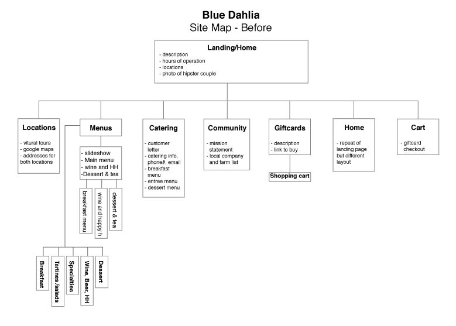
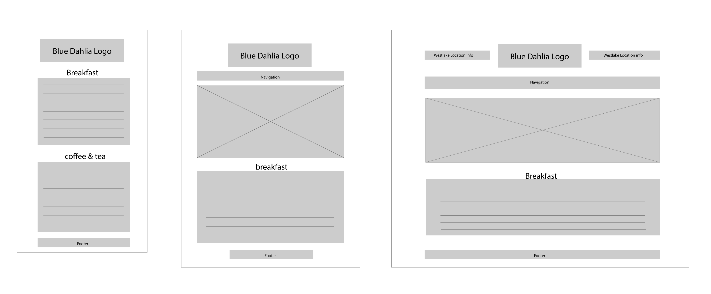
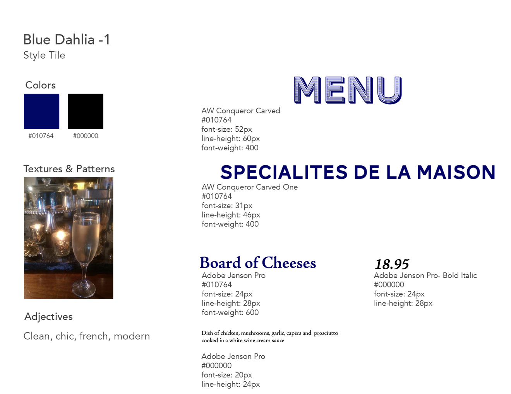
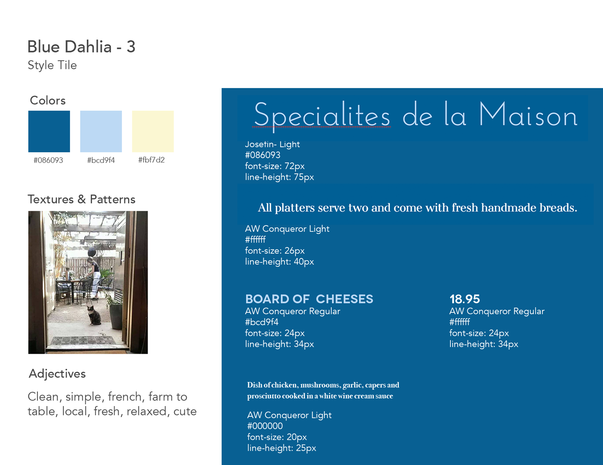
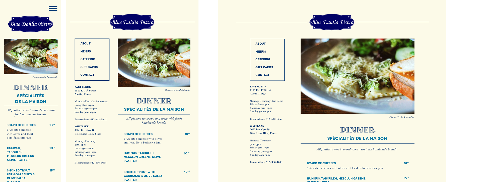

Research and Process
Word Lists
I started my process by researching the history of Blue Dahlia, interviewing clients, a site analysis, S.W.O.T Analysis and a word list.

Site Maps
I studied the current website and created a site map to figure out where content was on the site. Doing that helped me realize that some content was repeated in different parts of the site. That information helped me to better structure the content moving forward.
Wireframes
After gathering information about the content and figuring out the new structure, I created wireframes for 3 media queries to explore layouts. I moved forward with this one.
Style Tiles
I created a few style tiles to explore different type and color options. I decided to combine elements from 2 of my style stiles for the site.
 Comps
I brought all of my research pieces together to create a comp with color, type, content and layout. Brining everything together helped me to see what pieces were working together and which ones were not, helping me edit and make necessary changes.
